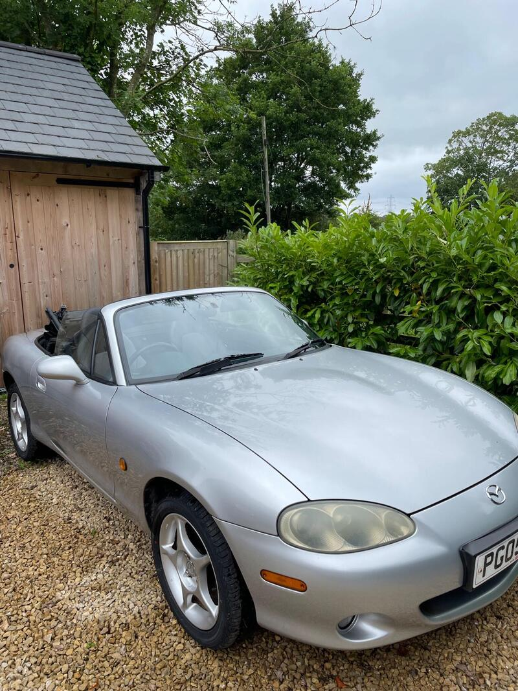
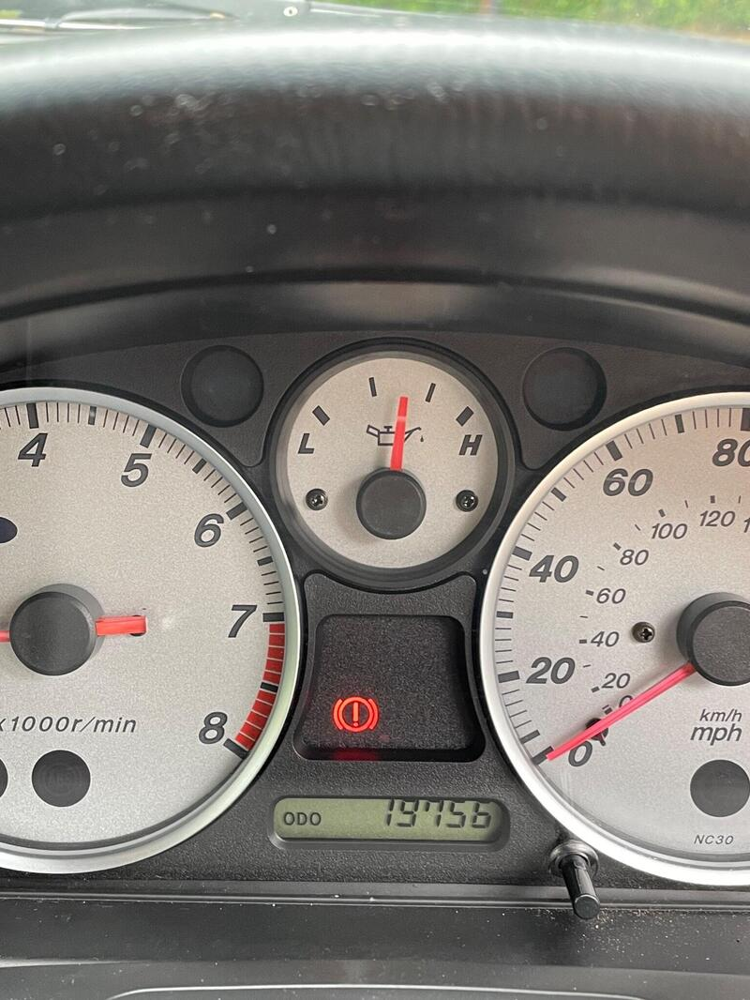
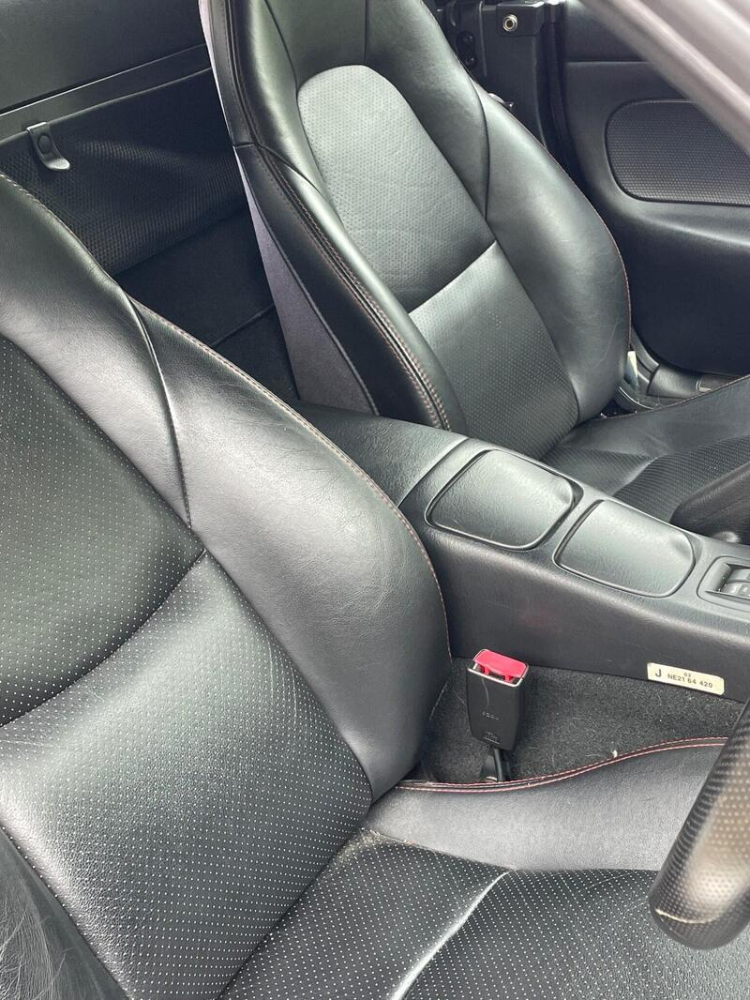
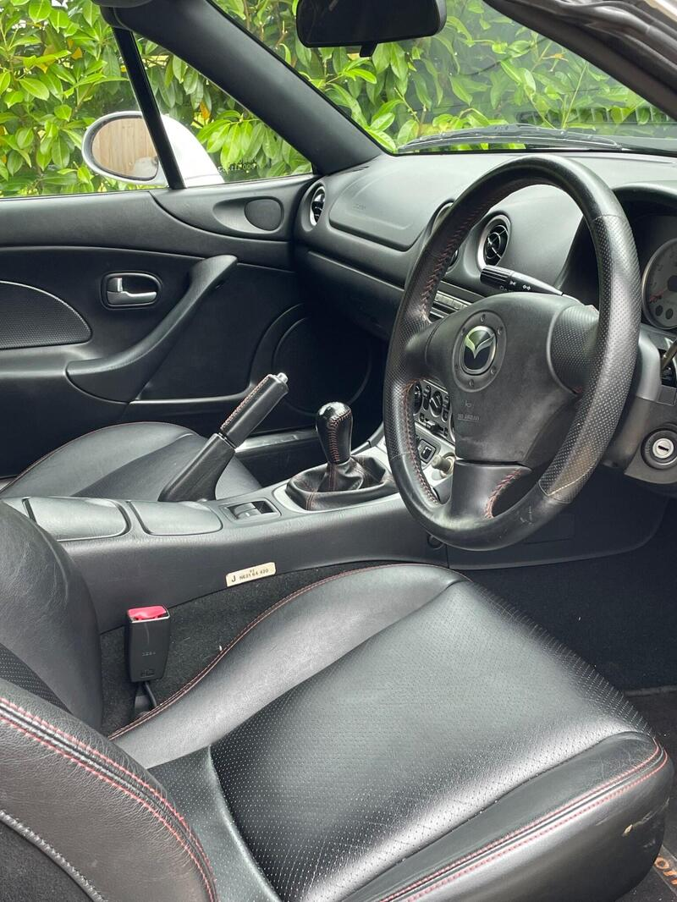

← All NB-FLRanked #19 of 45 for value




Seller photos from the AutoTrader ad.
✓ Checked 13 OctSpecial edition, not a Nevada
2005 · Icon
2005 MX-5 1.8 Icon
Very low miles. Worth a call.
£5,00019,900 miles · Preston
View on AutoTrader ↗Key facts
| Price | £5,000 |
|---|---|
| Year | 2005 |
| Miles | 19,900 |
| Variant | 1.8 Icon |
| Edition | Icon |
| Engine | 1.8 |
| Colour | Silver |
| Seller | Private |
| Location | Preston |
| From Poole | ~250 mi (estimate) |
| Source | AutoTrader, checked 13 Oct 2026 |
Why buy it
- Only 19,900 miles, recent roof, leather as new (ad)
Things to check
- Very short ad, so ask for the history and MOT
Very short ad, so ask for the history and MOT
- Mk2.5 weak spots
Sills, rear arches and chassis rails for rust, the hood seams, and when the cambelt was last changed.